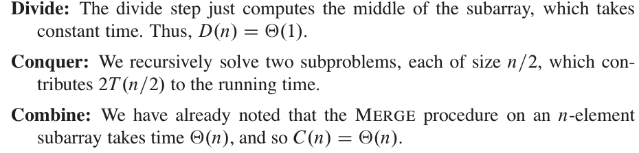
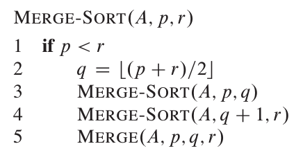
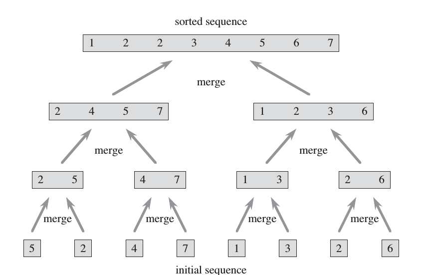
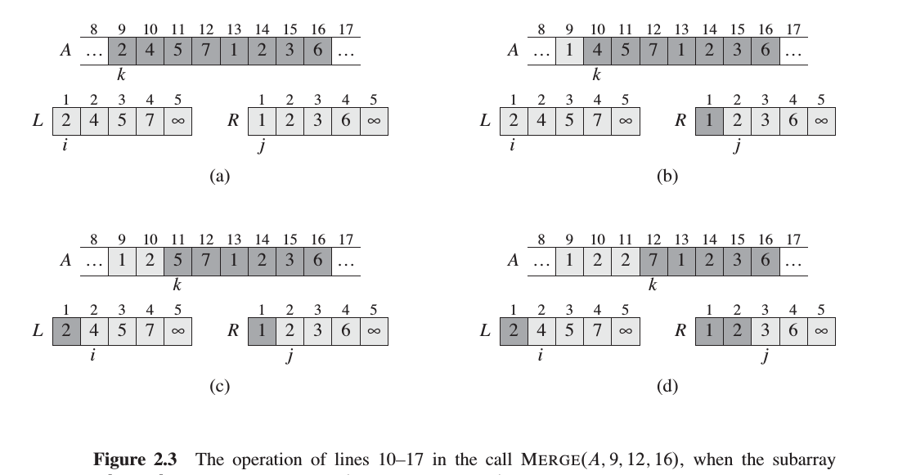
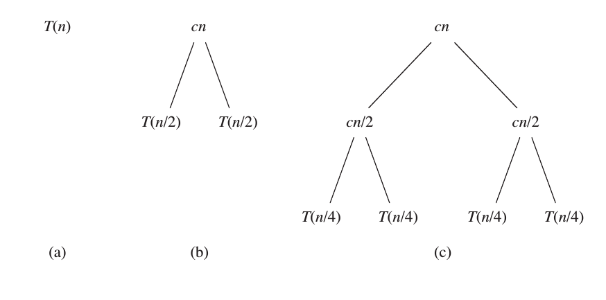
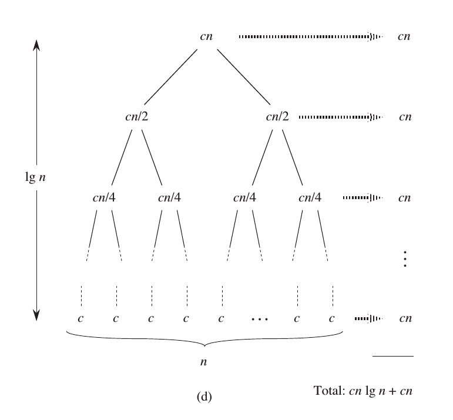

Merge Sort Algorithms
Overall idea
  Merge principle
Our MERGE procedure takes time O(n), where n is the total
number of elements being merged, and it works as follows. Returning to our card-
playing motif, suppose we have two piles of cards face up on a table. Each pile is
sorted, with the smallest cards on top. We wish to merge the two piles into a single
sorted output pile, which is to be face down on the table. Our basic step consists
of choosing the smaller of the two cards on top of the face-up piles, removing it
from its pile (which exposes a new top card), and placing this card face down onto
the output pile. We repeat this step until one input pile is empty, at which time
we just take the remaining input pile and place it face down onto the output pile.
Computationally, each basic step takes constant time, since we are comparing just
the two top cards. Since we perform at most n basic steps, merging takes O(n)
time.

Complexity Analysis
 Example

Java implementation
static void mergeSort(int[] a, int low, int high) { if (low == high) { return; } int middle = (low + high) >>> 1; mergeSort(a, low, middle); mergeSort(a, middle + 1, high); merge(a, low, middle, high); } static void merge(int[] a, int low, int middle, int high) { // // left a[low..:middle] // int l = low; // // right a[middle+1..:high] // int r = middle + 1; int len = 1 + high - low; int[] res = new int[len]; for (int indx = 0; indx < len; indx++) { if (l > middle) { res[indx] = a[r++]; } else if (r > high) { res[indx] = a[l++]; } else if (a[l] < a[r]) { res[indx] = a[l++]; } else if (a[l] > a[r]) { res[indx] = a[r++]; } else { res[indx] = a[l++]; } } for (int indx = 0; indx < len; indx++) { a[low++] = res[indx]; } }
Possible improvement
Although merge sort runs in O(n*lg(n)) worst-case time and insertion sort runs
in O(n^2) worst-case time, the constant factors in insertion sort can make it faster
in practice for small problem sizes on many machines. Thus, it makes sense to
coarsen the leaves of the recursion by using insertion sort within merge sort when
subproblems become sufficiently small. Consider a modification to merge sort in
which n=k sublists of length k are sorted using insertion sort and then merged
using the standard merging mechanism, where k is a value to be determined.